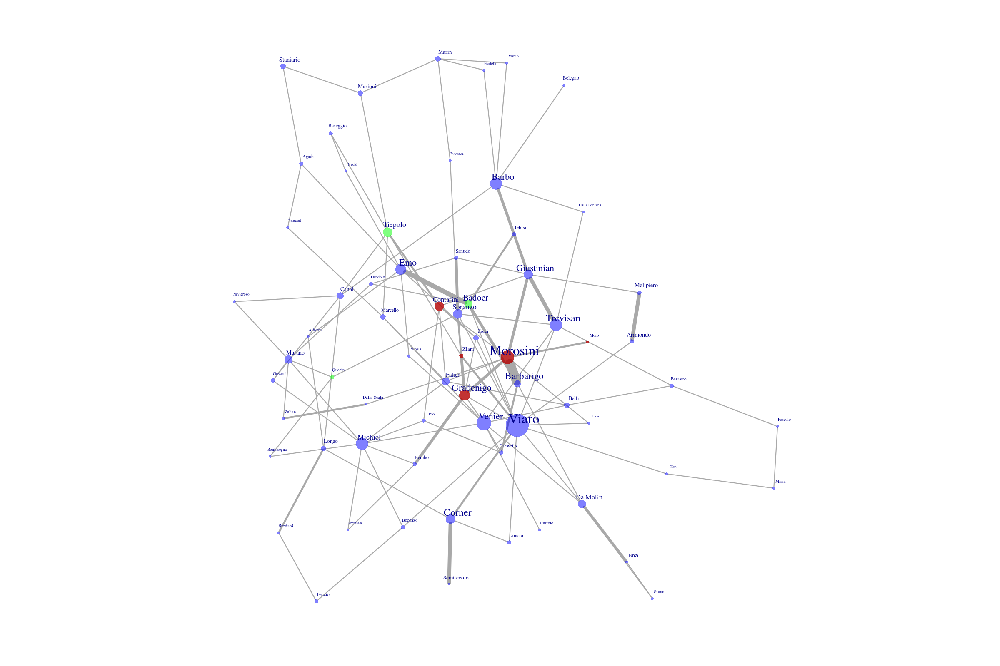
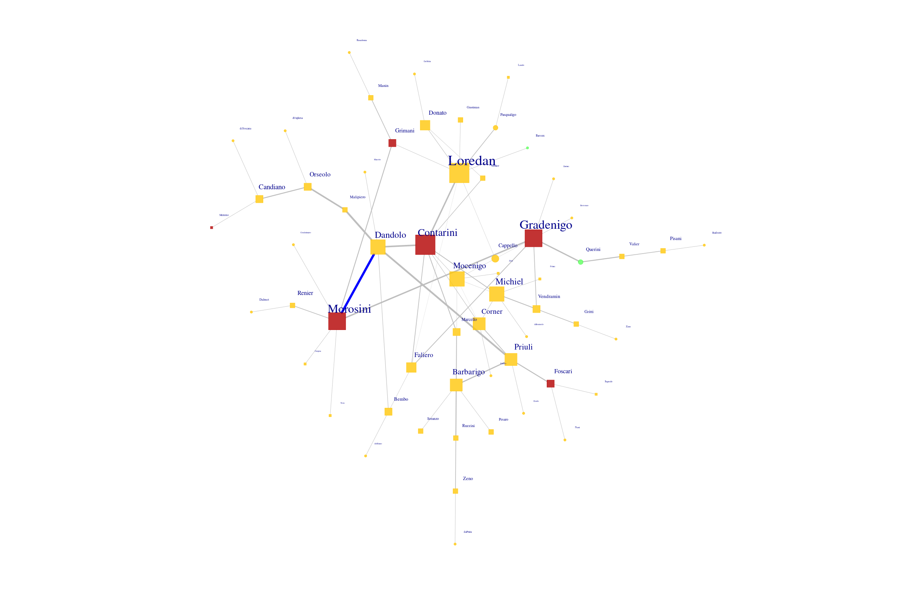

The complex networks of the Republic of Venice
Merelo (UGR-ES), Molinari (Ca'Foscari - IT)
Wivace, 2023
Venice was a republic
"Doges" were elected for life (initially) by popular assembly
Always strived for independence, but also rule of law
Doges were servants of the republic
And a maritime republic
Government-supported convoys called mute
Colleganza contracts: investor + ship captain
Registered in archivio dello stato
The serrata: closing the Maggior Consiglio to some families
Mainly those already in the Consiglio
Did it succeed? Popular vs. aristocratic

The electoral system needed super-majorities
Or a sizeable minority
The turn of your family came quickly
But how could you be sure it was your candidate?

All nobles are equal
But marrying a Contarini will boost your chances in government
Does it help to consider the Venetian republic a complex system?
Some evidence of attempts to control emergence behavior
Some evidence of tactical creation of social links
Top-down vs bottom-up explain some events in Venetian history
Vi ringrazio per la vostra atenzione